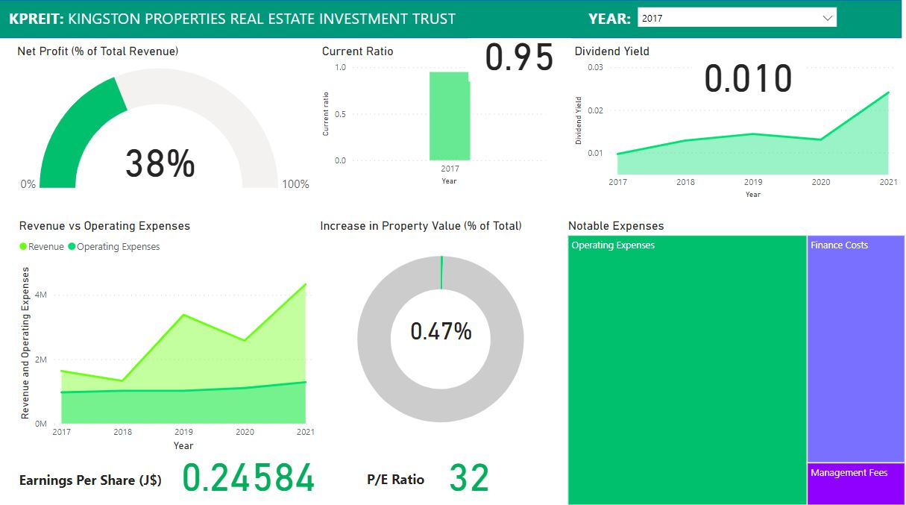
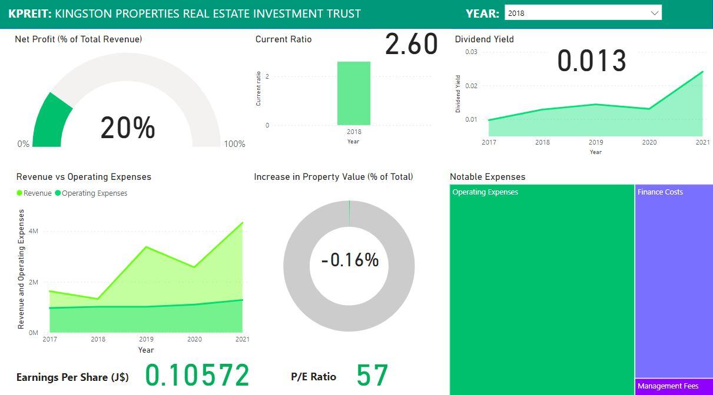
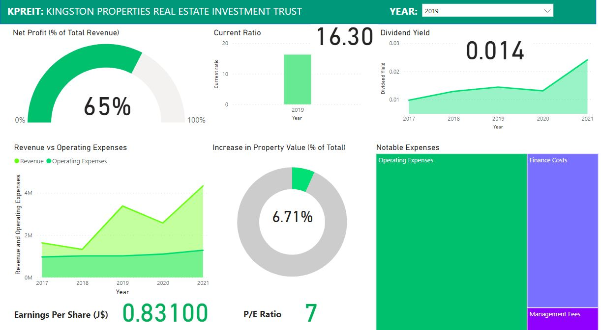
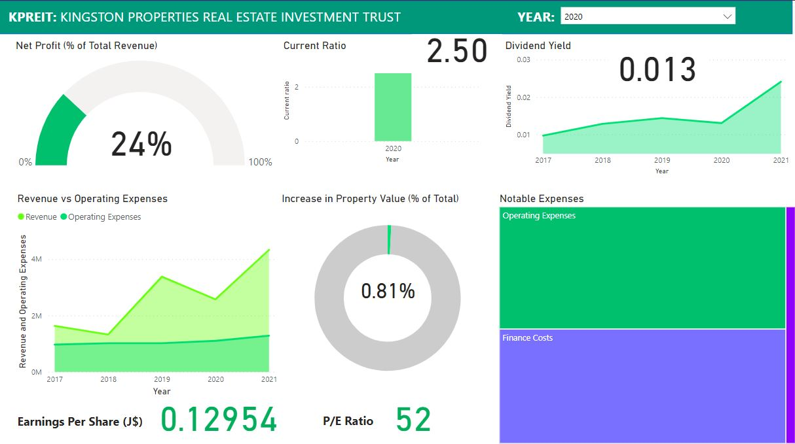
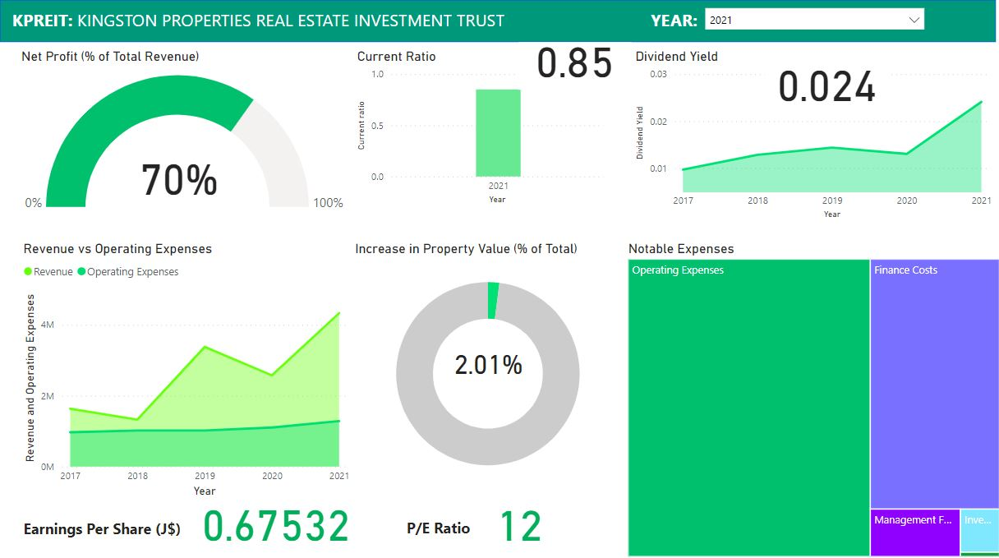

APO Highlights: KPREIT
Visualizing some points I found interesting
Kingston Properties Limited (JSE:$KPREIT) is a Jamaican company that operates a Real Estate Investment Trust. KPREIT recently announced an additional public offering (APO) (prospectus here), which I thought I'd take a look at and highlight some of the things I found interesting. First, we'll take a look at what some of these concepts mean. Then, I'll link the dashboard so that you can drill into the data's highlights. Finally, we'll look at some of the notes on analytics, trends and other highlights that jump out in the prospectus' data.
Disclaimer: this is not an endorsement for or against KPREIT and this is not financial advice either. I'm sharing some highlights I found interesting and how I got them. Speak to your licensed financial advisor before buying financial securities :)
What these concepts mean
If these words sound big/foreign/like they'll be a problem, fret not.
Real Estate Investment Trust
- We say REIT for short. A REIT is a type of stock that is publically traded, so you can buy shares of a REIT just like you could buy shares of any other publically traded company.
- Saying "JSE:$KPREIT" just means that the REIT operated by Kingston Properties, called KPREIT, trades on the Jamaica Stock Exchange (JSE for short).
- A REIT has to do with real estate, as the name suggests. REITs try to make money by:
- owning properties,
- operating them,
- lending money to others who want to own/operate properties, or
- a combination of any of these.
- If you buy shares from a REIT, you will likely get a more steady flow of dividends compared to other stocks because real estate tends to generate regular cash inflows (read: rent).
- A REIT is different from a real estate fund because they usually invest directly in properties.
Additional Public Offering
- Lots of persons know about initial public offerings, or IPOs. These happen when a privately owned company wants some cash (usually to expand), so they sell some ownership of their company to the public. This means they list on a public stock exchange (like the JSE) and anyone can buy a piece of the company.
- But what if a company that's already publically traded (meaning they already had an IPO) wants to raise cash and is willing to sell more of its ownership?
- No problem. They basically do the same thing as a company at IPO. But since they already made a public offering and want to do an additional one, we say they do an APO, or additional public offering.
Prospectus
This is a document with information about an investment opportunity. A prospectus gives information about a company's background, goals, management team and financials. The data visualized in this post came from the KPREIT April 2022 APO propsectus.
With those details out of the way, here's a dashboard with some highlights from said data.
Dashboard
I'll admit that Power BI made it hard for me to embed this dashboard, BUT I can link a GitHub repo with the .pbix file so that you can take a look. Here are snapshots from the past 5 years that show the changes in what the metrics say.
    And here's the set of metrics for the 5-year average (2017-2021 inclusive):
Notes, trends and highlights
This involved a bit of wrangling and trasnformation under a few assumptions. So Ill explain some of those in the notes. Then we'll look at the trends and highlights that stood out.
Notes on analytics
- Currency: the data for 2017 were in JMD and the rest of the years had USD. To compare apples to apples, I went on the Bank of Jamaica's website to find the average exchange rate of US$1:J$128.36 in 2017 and applied that rate to get an estimate of the 2017 USD values.
- Earnings per share: I used the same BOJ site to get the average exchange rates for the other years to approximate the earnings per share in Jamaican dollars, since that would be meaningful for most persons buying into KPREIT.
- Historical prices: the JSE's website only lets me see a year's worth of historical data for free. Fortunately, I found historical price data for KPREIT and used that at my peril. So this is not official, but was useful for deriving the price/earnings ratio and dividend yield.
- Revenue calculation: I'm not really familiar with the format that these financials were laid out in, but I looked at the cash flow statement of each year and approximated revenue as the sum of:
- Rental income
- Increase in fair value of investment property
- Gain/loss on disposal of investment property
- Dividend income
- Miscellaneous income
- Finance income
Trends and highlights
The Good
- Improving dividend yield: this is essentially how much in dividends you get for buying 1 dollar worth of stock. The bigger the number, the better, all else equal. KPREIT's is getting bigger -- which is good.
- Increasing net profit as % of total revenue: looking at the revenue vs operating expenses graph, this makes sense. The company is making more money faster than it's spending it.
- Structural efficiency: Operating expenses are overwhelmingly KPREIT's biggest expense. However, they are generating more cash with similar spending breakdowns, suggesting more efficiency overall in the company.
The concerning
- Fluctuating current ratio: the current ratio shows how readily the company can meet its short-term cash obligations. While being a REIT explains some of this, we'd ideally want to see the value stay between 1.5 and 3. Lower, and its a crunch for cash. Higher, and it likely reflects inefficient financial management.
- Weak property value growth: Jamaican real estate prices have been rising for a while and seem to be continuing to do so. While KPREIT's business model may be focused more on income generation than capital appreciation, one would hope to see investment property values increase faster than what the financials say.
- Unstable earnings per share: REITs aim for steady and substantial cash inflows, and the financials not reflecting that is a very noteworthy point.
Conclusion
There were a few challenges here: good data for Jamaica and its companies can be tough to come by and I ran into a brick wall trying to share the interactive dashboard. But thankfully, we got some takeaways in any case.
KPREIT is a REIT that the public can buy into on the JSE. It makes money by owning, operating and financing properties. They want to raise cash, so they're selling some of their ownership in an APO, whose details are outlined in a prospectus. While an improving dividend yield, increased profitability and numbers that suggest better operational efficiency speak well for the company, an unstable current ratio and earnings per share coupled with sluggish property value appreciation cause me to want to dig further into the data for an explanation.